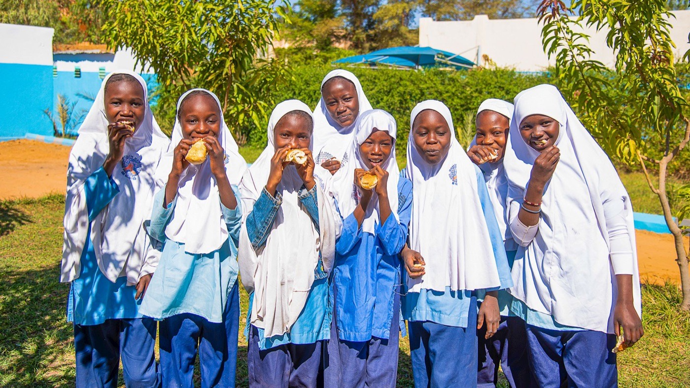
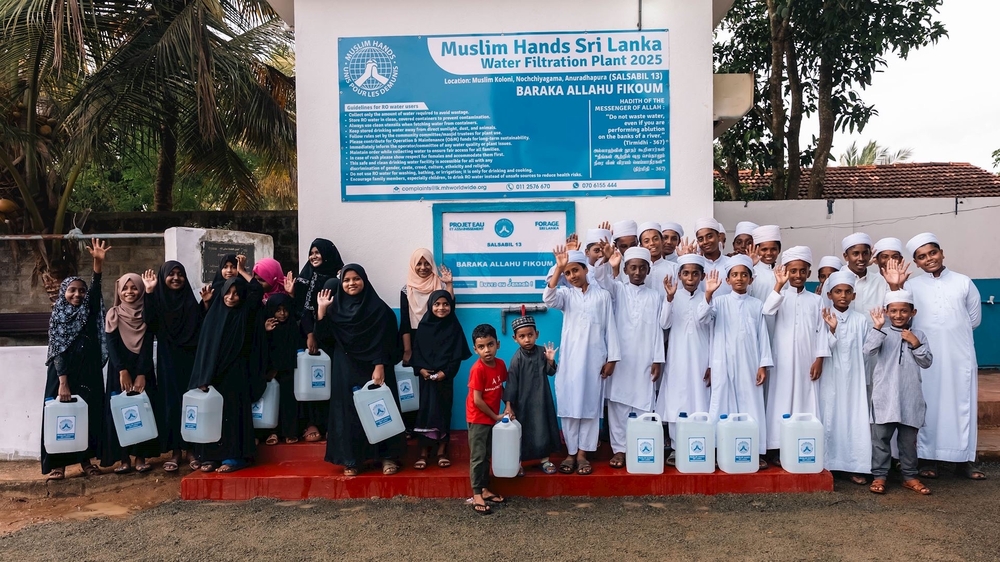

- 80 % des ressources consacrées aux missions sociales en 2024
- Comptes certifiés par un commissaire aux comptes, publiés au Journal officiel
- Membre de France Générosités, démarche Don en Confiance engagée
De Nottingham en 1993 à Paris en 2007
Tout commence en 1993. Une communauté de Nottingham, en Angleterre, se mobilise pour les victimes de la guerre en Bosnie. Des colis, puis des convois, puis une organisation : Muslim Hands est née. Trente ans plus tard, le réseau est présent dans plus de 30 pays. Il a parrainé plus de 50 000 orphelins, donné accès à l'eau potable à 2,5 millions de personnes et collecté plus de 200 millions de livres.
En France, l'association est créée le 30 mai 2007 à Paris, sous le régime de la loi 1901. Elle est reconnue d'intérêt général, ce qui ouvre droit à la réduction d'impôt sur les dons. Elle compte aujourd'hui une trentaine de salariés, des centaines de bénévoles et 33 240 donateurs qui lui font confiance.
Notre siège est à Saint-Ouen-sur-Seine, aux portes de Paris. Des antennes bénévoles animent Lyon et Marseille, où nous avons ouvert en 2023 le restaurant solidaire La Fourchette Fraternelle.

- 1993Une communauté de Nottingham se mobilise pour la Bosnie : Muslim Hands est née.
- 2007Création de Muslim Hands France à Paris, le 30 mai, association loi 1901 d'intérêt général.
- 2015Premières Écoles de l'Excellence et lancement du programme de forages au Sahel.
- 2023Ouverture de La Fourchette Fraternelle à Marseille ; réponse d'urgence à Gaza.
- 202418 pays, 500 000 personnes aidées, 46 millions d'euros collectés en cinq ans.
- 2027Objectif : 3 000 puits et 5 000 orphelins parrainés.
Secourir d'abord, puis rendre autonome
Une distribution nourrit une famille une semaine. Un puits, une école ou un atelier la fait vivre vingt ans. Nous faisons les deux, dans cet ordre.
Nos programmes vont de l'urgence (repas, eau, abris, soins) au développement durable (puits, écoles, cliniques, micro-entreprises). Chaque projet est conçu avec la communauté qui en bénéficie et suivi par nos équipes locales, présentes depuis des années dans chaque pays. Nous aidons sans distinction d'origine, de religion ou d'opinion, dans le respect des valeurs islamiques de dignité, de justice et de partage qui nous fondent.
Dignité
Des repas servis à table, des colis remis en main propre, jamais de file humiliante.
Autonomie
Chaque urgence débouche sur un projet durable, géré par la communauté.
Sans distinction
Seul le besoin compte, en France comme à l'international.
Transparence
Comptes certifiés, rapport annuel public, fonds zakat séparés.

Huit domaines d'intervention, un seul objectif
De l'eau potable au parrainage d'orphelins, chaque domaine répond à un besoin vital, puis construit une solution durable. Les chiffres sont ceux du rapport annuel 2024.
Eau potable
2 600 puits et forages depuis 2007, 135 000 personnes raccordées en 2024. Pompes manuelles, forages solaires, comités villageois d'entretien.
Orphelins
4 135 orphelins parrainés dans 11 pays : nourriture, école, santé, dans leur famille élargie, pour 39 € par mois.
Éducation
Écoles de l'Excellence au Mali, kits scolaires, bourses d'études et formation professionnelle pour les jeunes.
Santé et maternité
Cliniques de Kaboul et de Mogadiscio, kits de maternité, chirurgie de la cataracte, soins mobiles.
Sécurité alimentaire
Usines à pain au Yémen et à Gaza, 450 000 repas servis à Gaza avec le Programme alimentaire mondial, colis du Ramadan et viande de l'Aïd pour 188 000 personnes.
Moyens de subsistance
Élevage, ateliers de couture, petit commerce : des familles autonomes en un an grâce à une mise de départ.
Urgences
Gaza, Soudan, Liban, Yémen, Somalie : repas, eau, abris et soins engagés sous 72 heures, bilan public à la fin de chaque campagne.
En France
Maraudes, colis d'hiver, La Fourchette Fraternelle à Marseille, iftars solidaires, accompagnement de 175 mineurs non accompagnés.

Secourir, puis rendre autonome.
Un forage inauguré au Sri Lanka : vingt ans d'eau potable pour tout un village.
Construire un puitsDans quels pays intervenons-nous ?
Muslim Hands France agit dans 18 pays en 2024 et trois villes françaises, avec des bureaux et des partenaires locaux présents depuis des années, ce qui nous permet d'agir vite et de suivre chaque projet dans la durée.
Pays d'intervention en 2024
Survolez un pays pour le repérer sur la carte. Les urgences en cours sont détaillées sur la page Urgences.
Paris, Lyon, Marseille : la solidarité commence ici
À Marseille, près d'un habitant sur quatre vit sous le seuil de pauvreté. Notre restaurant solidaire La Fourchette Fraternelle y sert des repas chauds, à table, préparés par un chef. À Paris et à Lyon, nos bénévoles font des maraudes chaque semaine, distribuent des colis chaleur l'hiver et accompagnent 175 mineurs non accompagnés dans leurs démarches.
Ces actions d'aide alimentaire et d'hébergement ouvrent droit à la réduction d'impôt de 75 % jusqu'à 2 000 € de dons. Comprendre la déduction fiscale.

Qui dirige Muslim Hands France ?
L'association est administrée par un conseil d'administration bénévole, élu par l'assemblée générale, et dirigée au quotidien par une direction salariée. Les comptes sont certifiés chaque année par un commissaire aux comptes indépendant et publiés au Journal officiel des associations.
Présidence
Trésorerie
Secrétariat général
Direction
À compléter par l'équipe : noms, fonctions, parcours et photos des membres du bureau, du conseil d'administration et de la direction. C'est le premier signal de confiance que cherchent les donateurs et Google pour la requête « association humanitaire musulmane fiable ».
Où va votre don ?
En 2024, sur 100 € reçus, 80 € ont financé nos missions sociales, 12 € la recherche de fonds et 8 € le fonctionnement de l'association.
Le rapport annuel, les comptes et le rapport du commissaire aux comptes sont en ligne. La zakat est tracée dans un fonds séparé et distribuée intégralement aux huit catégories d'ayants droit. Voir la répartition détaillée et les rapports
Avec qui travaillons-nous ?
Nous ne distribuons jamais seuls. Sur chaque terrain, un partenaire opérationnel reconnu garantit l'accès, la logistique et le suivi.
Programme alimentaire mondial
ISWA Liban
France Générosités
Ils parlent de nous
Muslim Hands France répond aux journalistes sur ses programmes en France et à l'international : urgences, zakat, maraudes, Fourchette Fraternelle. Derniers sujets : portrait de nos maraudes sur Beur FM (février 2025) et le podcast « La Solidarité au Cœur ».
Contact presse : 01 49 48 05 05, contact@muslimhands.fr. Logos, photos libres de droits et dossier de presse sur demande.
« Ici, on ne fait pas la queue avec un ticket. On s'assoit, on est servi, on discute. C'est ce qui change tout. »Un convive de La Fourchette Fraternelle, Marseille, Beur FM, février 2025
Comment rejoindre Muslim Hands France ?
Maraudes, iftars, événements, traduction, compétences professionnelles : il y a une place pour chacun, à Paris, Lyon, Marseille ou à distance.
Bénévolat de terrain
Maraudes hebdomadaires, distributions d'hiver, service à La Fourchette Fraternelle, iftars du Ramadan.
Bénévolat de compétences
Graphisme, vidéo, traduction, comptabilité, droit, informatique : quelques heures par mois, à distance.
Emploi et stages
Chargé de programmes, communication, collecte, terrain. Les offres sont publiées ici et envoyées sur demande à contact@muslimhands.fr.

Nous écrire, nous appeler, venir nous voir
Adresse
Muslim Hands France
Bâtiment Energy 2, 155 rue du Dr Bauer
93400 Saint-Ouen-sur-Seine
Téléphone
01 49 48 05 05
Du lundi au vendredi, de 9 h à 18 h
contact@muslimhands.fr
Réponse sous 48 heures ouvrées
Identifiants
Association loi 1901 n° 1407
SIREN 498 845 502
Pour une question sur un reçu fiscal, indiquez la date et le montant du don. Pour une question sur la zakat, consultez d'abord la page Zakat al Maal 2027 et le calculateur.
Ce que l'on nous demande le plus souvent
Muslim Hands France est-elle une association fiable ?
Oui. Association loi 1901 d'intérêt général, comptes certifiés chaque année par un commissaire aux comptes et publiés au Journal officiel, 80 % des ressources consacrées aux missions sociales en 2024, membre de France Générosités, démarche de labellisation Don en Confiance engagée. Voir la page Transparence.
Qui finance Muslim Hands France ?
Essentiellement des particuliers : 33 240 donateurs et 117 000 dons en 2024, complétés par des entreprises mécènes et des partenariats opérationnels comme celui noué avec le Programme alimentaire mondial à Gaza.
Aidez-vous uniquement des musulmans ?
Non. Nous aidons sans distinction d'origine, de religion ou d'opinion, en France comme à l'international. Seul le besoin compte.
Dans quels pays agissez-vous ?
Dans 18 pays en 2024, du Sahel à l'Asie du Sud en passant par le Moyen-Orient, et en France à Paris, Lyon et Marseille. Voir la carte.
Quel est le lien avec Muslim Hands au Royaume-Uni ?
Muslim Hands France est membre du réseau Muslim Hands, né à Nottingham en 1993 et présent dans plus de 30 pays. C'est une association française indépendante, avec son conseil d'administration, ses comptes et son commissaire aux comptes.
Comment devenir bénévole ?
Remplissez le formulaire de la section Bénévolat. Nous vous rappelons sous une semaine pour trouver ensemble la mission qui vous convient.
Soutenir nos actions
50 € vous coûtent 17 € après réduction d'impôt de 66 %.
Faire un donPaiement sécurisé · reçu fiscal immédiat · 80 % en missions sociales